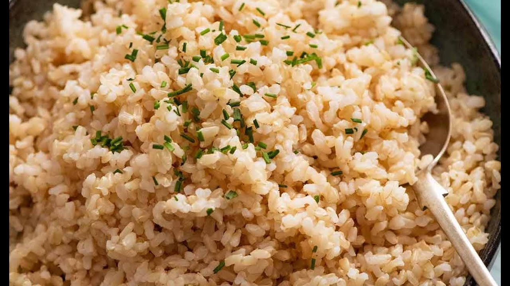

Brown Rice
- First, rinse the rice. This step is essential for removing excess starches on the outside of the rice. If they’re not washed away, they will cause the rice to clump and become gummy as it cooks. Our goal is to make perfectly fluffy brown rice, so don’t skip this step! I like to rinse mine in a fine mesh strainer over a large bowl until the water in the bowl runs clear.
- Then, measure the appropriate water to rice ratio. I use 2 cups of water for every cup of rice. Add the water and rice to a medium saucepan, and stir in a teaspoon of extra-virgin olive oil.
- Then, measure the appropriate water to rice ratio. I use 2 cups of water for every cup of rice. Add the water and rice to a medium saucepan, and stir in a teaspoon of extra-virgin olive oil.
- Next, it’s time to cook! Bring the water to a boil, reduce the heat, cover, and simmer for about 45 minutes, until the rice is tender and has absorbed the water.
- Finally, turn off the heat. Let the pot sit, covered, for 10 minutes before removing the lid and fluffing with a fork.
